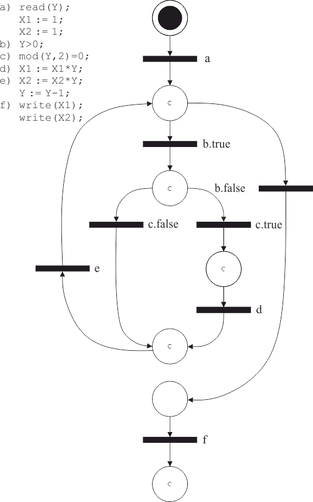

4.4 Моделирование параллельных систем взаимодействующих процессов
4.4.1 Моделирование последовательных процессов
Вырожденным случаем параллельной системы процессов является система с одним процессом. Сначала рассмотрим, как сетью Петри может быть представлен отдельный процесс. Отдельный процесс описывается программой на одном из существующих языков программирования.
Рассмотрим схему программы на рисунке 4.6.

Рис. 4.6 – Программа (а) и блок-схема (б) программы
Это последовательная программа на абстрактном языке программирования, вычисляющая и произведение всех четных чисел из отрезка для .
Программа представляет два различных аспекта процесса: вычисление и управление. Сети Петри удачно представляют структуру и управление программ. Они предназначены для моделирования упорядочения действий и потока информации, а не для действительного вычисления самих значений.
Стандартный способ представления структуры программы и потока управления в ней – это блок-схемы, которые, в свою очередь, могут быть представлены сетями Петри.
Блок-схема программы состоит из узлов двух типов (принятия решений, обозначаемые ромбами, и вычисления, обозначаемые прямоугольниками) и дуг между ними.
Блок-схема описанной выше программы изображена на рисунке 4.6, б. На рисунке 4.7 изображена сеть Петри, моделирующая данную блок-схему.

Рис. 4.7 – Сеть Петри программы
В сети Петри, моделирующей блок-схему, узлы блок-схемы представляются переходами сети Петри, а дуги блок-схемы – позициями сети Петри. Фишка в сети Петри представляет счетчик команд блок-схемы.